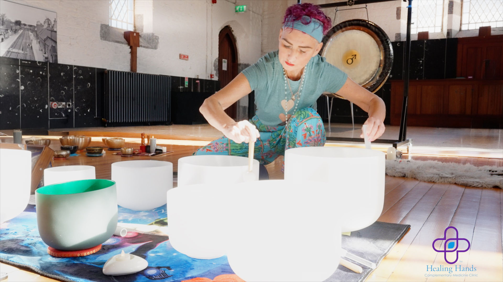
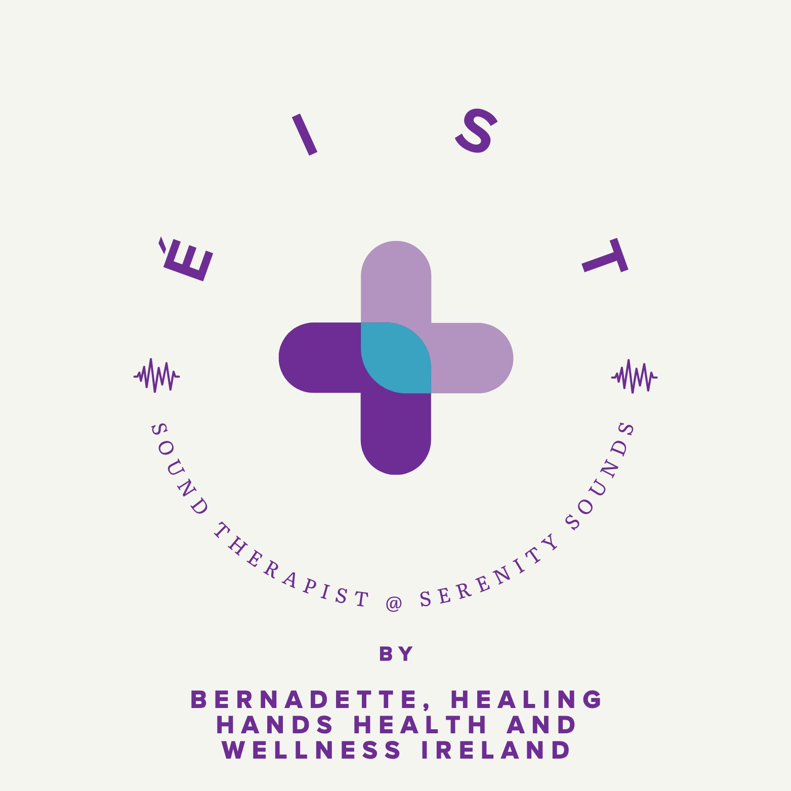

At the heart of Healing Hands Health & Wellness in Newbridge stands Bernadette Doyle, a dedicated practitioner whose compassionate approach and rich expertise have empowered countless individuals on their journey toward well-being. With years of hands-on experience and a profound commitment to holistic health, Bernadette is widely recognised for her innovative therapies, especially in the field of fertility reflexology, bio energy healing, tuning forks, and sound therapy. Her practice is a sanctuary where science, intuition, and artistry converge to support clients seeking physical, emotional, and energetic balance.
Bernadette's fascination with the body's innate ability to heal itself sparked her journey into complementary health care. Over the years, she has cultivated an extensive background in holistic therapies, working with individuals across all ages and backgrounds. Her hands-on experience include musclo-skeletal issues, sports injuries includes hundreds of sessions in medical clinical reflexology, energy balancing, and vibrational therapies, each tailored to the specific needs of her clients. Her gentle yet effective techniques have earned her a reputation for excellence and empathy, with many clients returning regularly for maintenance, support, and health optimisation. Bernadette's practice is informed by continuous professional development, participation in advanced workshops, and a commitment to keeping abreast of the latest research in holistic therapies.
Clients consistently praise Bernadette for her professionalism, empathy, and results-oriented approach. Many report significant improvements in their physical, emotional, and reproductive health following her sessions. Her innovative use of fertility reflexology, tuning forks, bio energy, and sound therapy instruments has transformed lives, creating a safe and nurturing environment for healing and harmony.

In the midst of busy days and changing seasons, we invite you to pause, breathe, and éist - to truly listen.
Our upcoming Sound Bathing Journey is a gentle sanctuary where sound, stillness, and soul meet. A space to rest your body, quiet the mind, and come home to yourself.
✨ All communal sound journeys are facilitated at Solas Bhride Spiritual Centre, Kildare ✨
Next scheduled event: Friday 25th September | 6:30pm start
The theme for each session will be specified prior to the event.
Each session is an intimate experience, held with care, intention, and deep respect for your personal journey. Whether you're seeking grounding, healing, or simply a moment of peace, you are warmly welcome.
💜 Booking slots are limited to preserve the sacredness of the space.
Come as you are. Leave feeling lighter, calmer, and more connected.
We look forward to sharing this journey with you. 🌙✨
Married Couple of 10 Years, Kildare
"After more than 10 years of marriage, my husband and I finally tried a sound bath with Bernadette-and wow, what a game-changer for us. We showed up as total newbies, a bit skeptical after years of kids, work, and the usual routine grind, but lying there side by side as those soothing sound waves washed over us, we both just melted into this incredible deep relaxation we'd almost forgotten was possible.
It was like the vibrations tuned us back into each other without needing a single word-creating this quiet, shared space where we felt truly connected again, beyond the daily chaos. The next day hit us with a real detox: we were tired and a little emotional, but in the best way, like stuff we'd been carrying forever finally started to shift.
That opened the door to some raw, heartfelt talks we hadn't had in ages, and honestly, it's given us a fresh spark. Bernadette, thank you-this was pure magic for reconnecting after all these years! We'd tell any long-married couple to book it."
WhatsApp: 086 389 3413
Emails: hhandshealthandwellness@gmail.com - liveserenitysounds@gmail.com